<ion-app>
  <ion-menu side="start">
    <ion-header>
      <ion-toolbar color="primary" class="toolbar">
        <ion-item class="p-left-4 ion-item-avatar" color="primary" lines="none">
          <ion-avatar class="avatar">
            
          </ion-avatar>
          <ion-item class="colors-content ion-item-avatar" slot="end" color="light" lines="none">
            <ion-icon class="colors-icons" color="primary" slot="end" *ngIf="showColorRange" name="bt-invert-colors"></ion-icon>
            <ion-icon class="colors-icons" color="tertiary" slot="end" *ngIf="showColorRange" name="bt-invert-colors"></ion-icon>
            <ion-icon class="colors-icons" color="warning" slot="end" *ngIf="showColorRange" name="bt-invert-colors"></ion-icon>
            <ion-icon class="colors-icons" color="secondary" name="sunny" slot="end" (click)="colorRangeVisibility()"></ion-icon>
          </ion-item>
        </ion-item>
        <ion-item class="p-left-4 ion-item-avatar" color="primary" lines="none">
          <ion-label>Julio Thomazelli</ion-label>
        </ion-item>
      </ion-toolbar>
    </ion-header>
    <ion-content id="content">
      <ion-list>
        <ion-menu-toggle>
          <ion-item (click)="scheduleClick()">Agenda</ion-item>
          <ion-item (click)="notificationClick()">Notificações</ion-item>
          <ion-item (click)="chatClick()">Chat</ion-item>
          <ion-item (click)="serviceClick()">Serviços</ion-item>
          <ion-item (click)="configurationClick()">Configurações</ion-item>
          <ion-item (click)="logoutClick()">Sair</ion-item>
        </ion-menu-toggle>
      </ion-list>
    </ion-content>
  </ion-menu>
  <ion-router-outlet main></ion-router-outlet>
</ion-app>